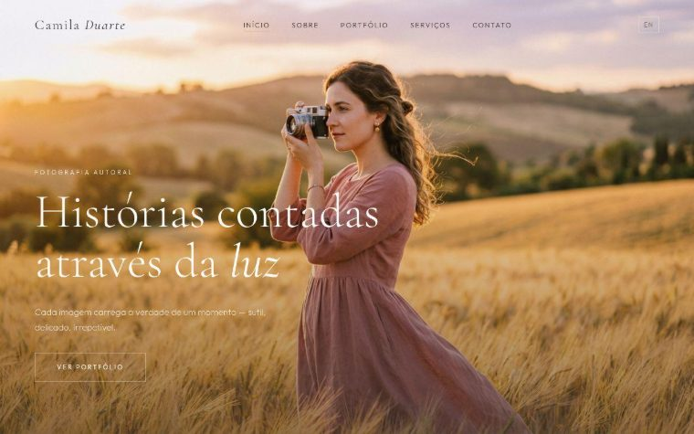

Camila Duarte Fotografia:
site portfólio (fictício)
Um exercício com um objetivo específico: praticar um tipo de site em que a imagem é o produto e o texto entra em segundo plano. É o oposto do site institucional que costumo construir.
Ver o projeto no ar
Contexto
Sites de portfólio criativo funcionam por regras diferentes das de um site institucional. Ali a hierarquia é invertida: a imagem carrega a mensagem, o texto apoia, e o layout precisa sumir para não competir com o trabalho exposto.
Como não havia cliente, escrevi o briefing: uma fotógrafa autoral com anos de estrada, atuando em casamentos, retratos, maternidade e família, precisando de um lugar próprio para mostrar o trabalho e receber contato. Persona inventada, mas com as restrições que um projeto real teria.
Problema
O desafio central de um portfólio visual é o equilíbrio entre peso e velocidade. Fotografia exige imagem grande e de qualidade, e imagem grande é exatamente o que derruba o tempo de carregamento de uma página.
Há também o problema de navegação: galeria com muitas categorias (casamento, retrato, maternidade, família) precisa deixar o visitante achar o que procura sem transformar a home num menu longo.
E, no fim, o site precisa converter. Portfólio bonito que não deixa claro como contratar o serviço cumpriu metade da função.
Solução
O layout ficou minimalista de propósito: pouca interface, muito espaço em branco, tipografia discreta. Tudo que não é a fotografia recua.
A navegação foi organizada em torno das categorias de trabalho, com seções separadas para a apresentação da fotógrafa, os serviços oferecidos e o contato, cada uma alcançável sem rolar a página inteira.
Acrescentei suporte multilíngue, que era parte do briefing que escrevi, e integração com redes sociais e WhatsApp, porque no mercado de fotografia o primeiro contato costuma acontecer por esses canais e não por formulário.
Tecnologias
HTML, CSS e JavaScript diretos, sem framework. É a mesma abordagem que uso em projeto real, o que faz do exercício uma prática de verdade e não uma demonstração descartável.
Resultado
O resultado é um site portfólio completo e navegável, que cumpre o que o briefing fictício pedia: apresentar o trabalho com destaque, contar quem é a profissional e abrir um caminho curto para o contato.
Não há métrica de negócio para mostrar aqui, e não haveria como haver: não existe cliente, não existe operação, não existe cliente convertido. O que este projeto demonstra é decisão de layout, organização de galeria e código responsivo. Nada além disso.
Serviços usados neste projeto
Criação de Sites
O mesmo tipo de trabalho aplicado a projetos reais, com escopo, prazo e valor fechados.
Case: Brucker Printers: site
Um projeto de cliente real, com problema de negócio concreto por trás.
Case: Braskit: SEO técnico
Diagnóstico e correção de SEO num site que já existia e não era encontrado.
Precisa de um site
que mostre o seu trabalho?
Portfólio, estúdio, ateliê ou consultório: se o seu serviço se vende pelo que você mostra, o site precisa ser construído em torno disso.